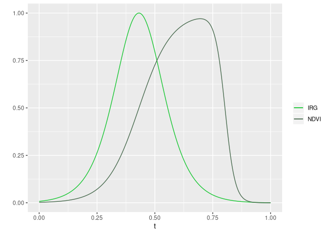

irg is an R package for calculating the instantaneous rate of green-up (IRG). It can be used to fit a double logistic curve to a time series of normalized difference vegetation index (NDVI) and calculate IRG, as described in Bischoff et al. (2012) [1]. IRG helps identify the timing of green-up and can be used to determine if migratory animals are “surfing” a green-wave of high quality forage or if non-migratory animals are selecting available resources at the peak IRG in their environments.
At the moment, the . Update: we recently added an example Landsat 8 dataset. The irg package is designed to work with MODIS imagery, but we’re working on adding other sensorsirg package functions have been updated to be more flexible to different sensors. Let us know (open an issue!) if you use a sensor other than MODIS for calculating IRG. Thanks!
Approach
The irg package opts for a tabular calculation of IRG as opposed to a raster based approach. Sampling imagery is left up to the user and a prerequisite for all functions. The main input (DT) for all functions is a data.table of an NDVI time series. The sampling unit (id) is flexible (a decision for the user) though we would anticipate points or polygons, or maybe a pixel. All functions leverage the speed of data.table to efficiently filter, scale, and model NDVI time series and calculate IRG.
More details in the first vignette: Getting started with IRG.
Installation
Install with CRAN
# Install
install.packages('irg')or R-universe
# Enable the robitalec universe
options(repos = c(
robitalec = 'https://robitalec.r-universe.dev',
CRAN = 'https://cloud.r-project.org'))
# Install
install.packages('irg')Usage
IRG is calculated by filtering an NDVI time series, scaling variables, modeling the time series with a double logistic curve and taking the first derivative of this curve.
Here, the example uses use the meta function irg. Generally, users should opt for the individual filtering, scaling, modeling and irg functions separately to tweak settings and column names (see Getting started with IRG).
library(data.table)
library(ggplot2)
library(irg)
# Load package data
ndvi <- fread(system.file("extdata", "sampled-ndvi-MODIS-MOD13Q1.csv", package = "irg"))
# Filter and scale NDVI
filter_ndvi(ndvi)
scale_ndvi(ndvi)
scale_doy(ndvi)
# Guess starting parameters
model_start(ndvi, id = 'id', year = 'yr')
# Double logistic model parameters given starting parameters for nls
mods <- model_params(
ndvi,
returns = 'models',
id = 'id', year = 'yr',
xmidS = 'xmidS_start', xmidA = 'xmidA_start',
scalS = 0.05,
scalA = 0.01
)
# Fit double log to NDVI
fit <- model_ndvi(mods, observed = FALSE)
# Calculate IRG for each day of the year
calc_irg(fit)
# Plot IRG and NDVI for 1 year at 1 point
cols <- c('IRG' = '#14c62f', 'NDVI' = '#47694d')
random_yr <- sample(fit$yr, 1)
random_id <- sample(fit$id, 1)
ggplot(fit[yr == random_yr & id == random_id], aes(x = t)) +
geom_line(aes(y = irg, color = 'IRG')) +
geom_line(aes(y = fitted, color = 'NDVI')) +
geom_point(aes(y = scaled), data = ndvi[yr == random_yr & id == random_id]) +
scale_color_manual(values = cols) +
labs(y = '', color = '')
Contributing
Contributions welcome! See details in CONTRIBUTING.md.
Please note that the irg package is released with a Contributor Code of Conduct. By contributing to this package, you agree to abide by its terms.
Thanks
To Mike Laforge (@MamlSpatialEco) and Eric Vander Wal for thoughtful discussion that stimulated development of this package.
References
[1] Bischof, R., Loe, L. E., Meisingset, E. L., Zimmermann, B., Van Moorter, B., & Mysterud, A. (2012). A migratory northern ungulate in the pursuit of spring: jumping or surfing the green wave? The American Naturalist, 180(4), 407-424.